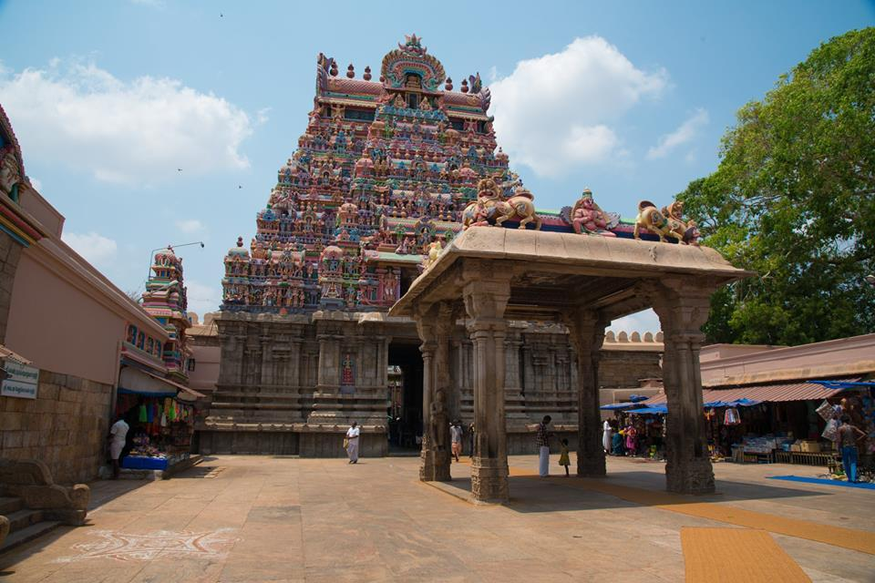
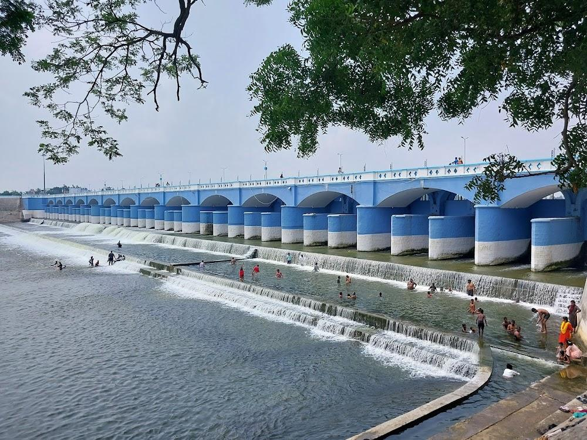
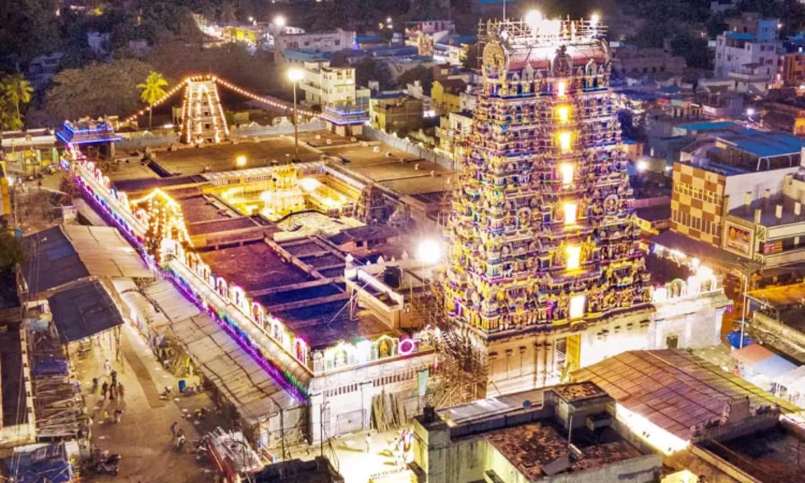
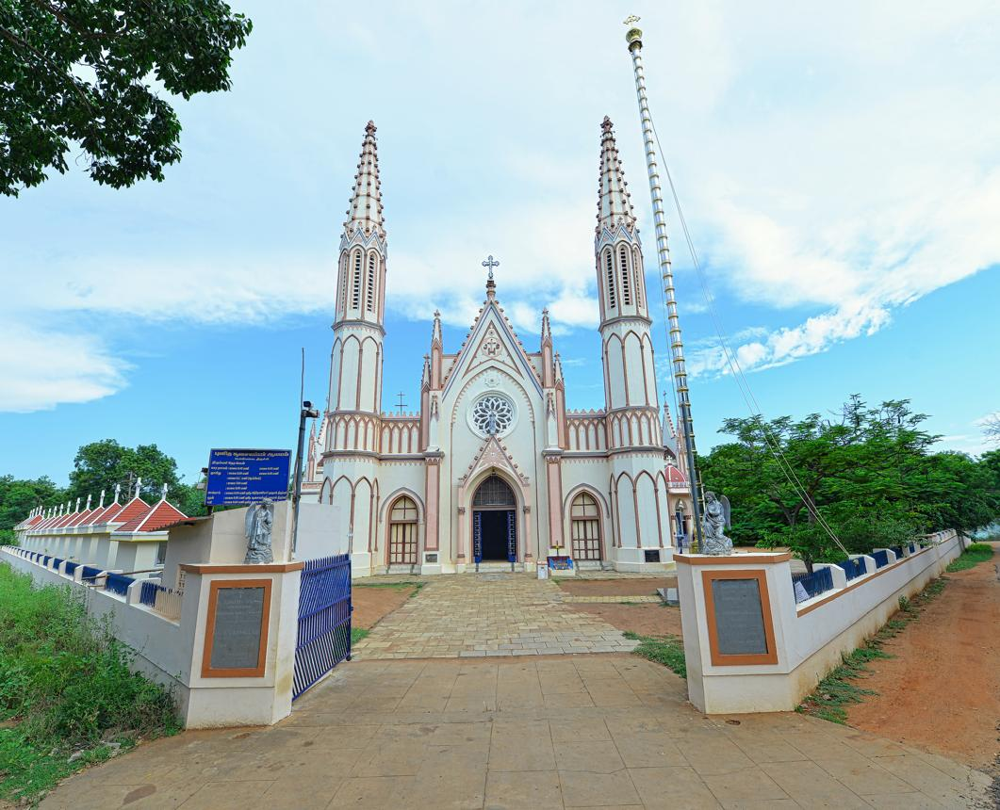

Welcome to Tiruchirappalli
Explore the beauty of Tiruchirappalli with ancient temples, historical monuments, transport facilities, nearby hotels, hospitals and emergency services.
Explore Map
Explore the beauty of Tiruchirappalli with ancient temples, historical monuments, transport facilities, nearby hotels, hospitals and emergency services.
Explore Map
Discover the most popular places to visit in Salem.
A famous hill temple dedicated to Lord Ganesha, offering a panoramic view of Tiruchirappalli city.

One of the largest and most famous Vishnu temples in India, located at Srirangam.

An ancient dam built by Karikala Chola, famous for its engineering excellence and scenic beauty.

A renowned temple dedicated to Goddess Mariamman, attracting thousands of devotees every year.

A beautiful historic church in Tiruchirappalli, admired for its peaceful atmosphere and elegant architecture.
A beautiful picnic spot where the Cauvery River branches into two streams amidst lush greenery.
Easy and convenient transportation across Salem.
TNSTC and private buses connect Tiruchirappalli with major cities across Tamil Nadu.
Tiruchirappalli Junction is one of the busiest railway stations in South India.
Tiruchirappalli International Airport offers domestic and international flights.
Best hotels to stay during your visit.
A luxury hotel offering premium rooms, fine dining and modern facilities.
A well-known hotel providing comfortable accommodation and excellent hospitality.
A popular hotel located in the heart of Tiruchirappalli with quality services.
Emergency medical services available nearby.
A leading multi-speciality hospital providing advanced healthcare and 24×7 emergency services.
A trusted hospital offering quality treatment with experienced specialists.
A well-known hospital providing excellent medical care and emergency services.
Know some interesting facts about Coimbatore.
Tiruchirappalli
Tamil
Rockfort Temple & Srirangam Temple
Important helpline numbers for your safety.
100
108
101
View Tiruchirappalli location on Google Maps.